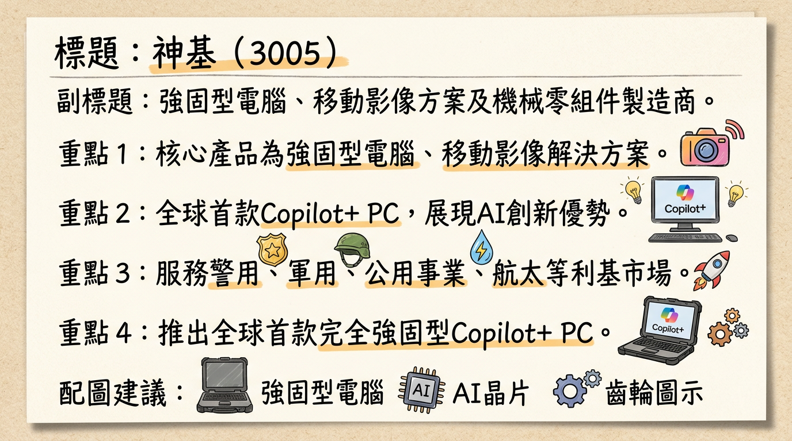
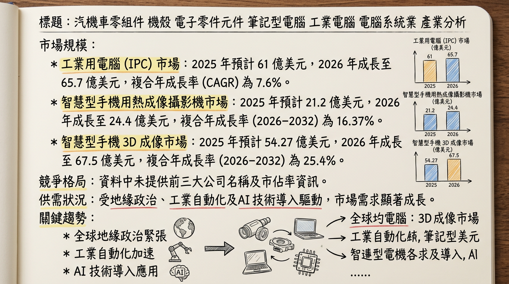
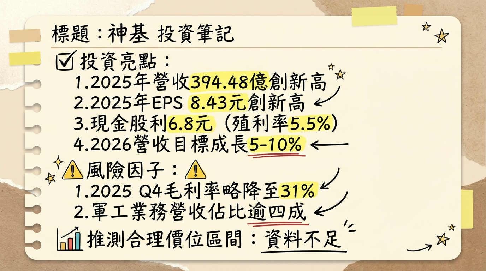

3005 神基 深度研究報告
一句話摘要
神基 (3005) 2025年表現卓越，創下歷史新高營收與EPS。展望2026年，在軍工、無人機、AI伺服器機構件以及AI PC等多元動能驅動下，公司預期營收將成長5%至10%。儘管面臨記憶體成本壓力與部分機構件業務衰退，神基憑藉其強固型電腦的利基市場領導地位及積極的全球產能佈局，成長前景依舊穩健，法人普遍給予正向評價。
公司概覽
神基科技（3005）是一家全球領先的強固型電腦、移動影像解決方案及多元化電子與機械零組件製造商。其業務涵蓋高附加價值的專業應用領域，並積極拓展新興科技如AI與軍工市場。
業務與產品線
神基的核心業務包括：
- 強固型電腦 (Getac)：提供強固型筆記型電腦、平板電腦、手持設備，應用於軍用、警用、公共事業、運輸物流、能源等嚴苛環境。近年積極整合AI功能，推出如Getac B360 Plus（全球首款完全強固型Copilot+ PC）、Getac F120（全球首款完全強固型Copilot PC平板電腦）、Getac V120（AI-ready強固型筆記型電腦）、Getac UX10/UX10-IP、Getac S510AD（結合AI效能與永續製造）、Getac ZX10（輕量級完全強固型Android平板）。
- 移動影像解決方案：警用車載影像系統及相關軟體。
- 機構件：包括輕金屬壓鑄件、塑膠機構件、車用零組件（如安全帶轉軸、ADAS相關產品）及AI伺服器機殼與機櫃（透過子公司漢通科技）。
- 航太扣件：提供精密零組件給航太產業。
營收結構 (2025年8月資料)
| 業務類別 | 營收佔比 | 主要產品/應用領域 |
|---|
| 電子件 | 50% | 強固型電腦（軍工、警消、公共事業、能源、運輸物流）、移動影像解決方案 |
| 機構件 | 40% | 塑膠機構件、車用零組件（安全帶轉軸、ADAS）、AI伺服器機殼與機櫃、運動領域產品 |
| 航太扣件 | 10% | 航空器用精密扣件 |
製造基地
- 台灣：汐止、林口、桃園大智廠（主要生產強固PC）。
- 中國大陸：昆山、常熟廠區。
- 越南：河內廠區（2026年上半年開始量產）。
- 備註：目前公開資料未提供各製造基地的具體營收貢獻比例。
核心競爭優勢
強固型電腦領先地位與技術優勢：神基是全球少數能提供全系列強固型電腦的廠商之一，產品符合軍規、工規等嚴苛標準。近年積極導入AI技術，推出多款AI-ready及Copilot+ PC，鞏固其在利基市場的技術領先地位。其產品導入週期長、客戶黏著度高，形成穩定營收來源。
多元化業務佈局降低營運風險：除了核心的強固型電腦，神基在汽車零組件、航太扣件、塑膠機構件及新興的AI伺服器機殼領域均有佈局。這種多元化策略有效分散了單一產業波動的風險，並抓住不同產業的成長機會。
軍工、無人機及AI新興市場潛力：受惠於全球國防支出擴大、地緣政治緊張，神基的軍工業務（佔強固型電腦逾四成）持續強勁增長。同時，積極布局無人機地面控制站及關鍵零組件，並透過子公司漢通科技切入AI伺服器機殼市場，抓住AI與無人機帶來的增量商機。
全球化產能與在地化服務：台灣、中國及越南的生產基地分佈，使其能有效應對地緣政治與客戶在地化生產的需求（如「China Plus One」策略）。越南廠區的擴充與台灣汐止廠的啟用，將進一步提升產能彈性與供應鏈韌性。
財務分析
月營收趨勢 (最近6個月)
| 月份 | 營收金額 (新台幣千元) | 月增率 (MoM) | 年增率 (YoY) |
|---|
| 2026年1月 | 3,188,233 | -4.97% | 1.07% |
| 2025年12月 | 3,355,263 | -7.31% | 10.63% |
| 2025年11月 | 3,620,073 | 8.45% | 15.60% |
| 2025年10月 | 3,337,966 | -1.60% | 10.93% |
| 2025年9月 | 3,392,367 | 4.01% | 9.45% |
| 2025年8月 | 3,261,303 | 4.53% | 9.30% |
季度數據
神基2025年第四季表現強勁，營收創單季歷史新高。
- 2025年第四季營收：新台幣103.13億元 (季增5.53%, 年增12.43%)
- 毛利率：31.02%
- 營業利益率：14.37%
- 每股盈餘 (EPS)：2.07元
年度趨勢
神基在2025年營收與獲利均創下歷史新高，展現穩健成長。
| 年度 | 合併營收 (新台幣億元) | 年增率 | 每股盈餘 (新台幣元) | 年增率 |
|---|
| 2024年實際 | 356.68 | - | 7.26 | - |
| 2025年實際 | 394.48 | 10.6% | 8.43 | 16.1% |
| 2026年預估 | 414.20 - 433.93 | 5%-10% | 約9.0 - 9.38 | 6.7%-11.3% |
法說會重點 (2026年3月2日)
管理層對各產品線的具體出貨量/訂單能見度說明
* 2025年回顧：軍工應用年成長約
20%，警消、公共事業及能源應用有高個位數至中個位數成長。關係型客戶佔比已超過
50%。
* 2026年展望：看好軍工規市場成長潛力，預計軍工業務將再年增逾兩成。無人機商機有望倍數成長，已接觸超過全球100家公司。AI PC將因規格提升與DRAM漲價，使平均單價 (ASP) 提高20%至25%。
* 2026年展望：預期此業務將有高個位數或低雙位數
衰退，上半年相對較淡。下半年主要客戶有新機種推出、英特爾CPU供應改善及遊戲機需求回升，筆電相關業務有機會轉旺。
* 2026年展望：預期將維持
微幅成長，受惠於「China Plus One」供應鏈轉移趨勢，越南廠業務預期將持續增加。
* 新業務AI伺服器機櫃在2025年佔電子件營收約
1%，預計2026年將有
50%至100%的顯著成長，且毛利率佳。
產能利用率、資本支出金額
* 2025年資本支出約
新台幣10-15億元，主要用於越南廠擴充產能及桃園大智廠（主要生產強固PC，已於2025年第四季投產）。
* 2026年資本支出預計在新台幣7億至12億元之間，主要用於越南廠區產能擴充與台灣龜山廠區投資。
* 台灣汐止廠將於2026年第一季末至第二季初開工，以因應國際客戶對「Made in Taiwan」產品需求。
* 中國崑山廠部分產能將分階段轉往越南。
- 產能利用率：未找到2025-2026年的具體百分比數據。
管理層給出的下季/下半年 guidance
- 2026年全年營收展望：公司預期全年營收將成長5%至10%。
- 2026年上下半年營收佔比：預估上半年營收佔比約46%至48%，下半年則為52%至54%。
- 毛利率展望：預期毛利率將維持近年水準約31%至33%區間。公司已進行策略性備料DRAM等關鍵零組件至2026年上半年，並將透過價格轉嫁應對成本壓力。坦言2026年第一季毛利率會略有「顛簸」。
- 公司「五年營收翻倍」的目標維持不變。
券商觀點
券商普遍對神基的2026年展望持樂觀態度，尤其看好其在軍工、AI伺服器機殼及強固型電腦的成長動能。
目標價區間與評等 (2026年3月3日)
| 券商名稱 | 目標價 (新台幣元) | 評等 | 日期 |
|---|
| 三家券商 | 147 ~ 160 | 看多 | 2026/03/03 |
2025-2026年 EPS 預估
- 2025年度EPS：約8.43元 (實際數字)。
- 2026年度EPS預估：約9.0元 ~ 9.38元 (綜合法人預估)。
重大調升/調降評等
2026年3月3日，有3家券商發布績效評等報告，皆評等為「看多」。目前未提及具體重大調升或調降評等資訊，但顯示券商對神基的看法為正向。
財報深度分析
利潤率趨勢
神基近四季的毛利率、營業利益率、稅後淨利率趨勢如下，顯示其穩定的獲利能力。
| 季度 | 毛利率 (%) | 營業利益率 (%) | 稅後淨利率 (%) |
|---|
| 2025 Q4 | 31.02 | 14.37 | 11.51 |
| 2025 Q3 | 31.54 | 15.62 | 13.94 |
| 2025 Q2 | 33.58 | 18.01 | 14.84 |
| 2025 Q1 | 31.10 | 14.88 | 13.64 |
| 2024 Q4 | 31.81 | 14.08 | 12.27 |
| 2024 Q3 | 32.04 | 14.90 | 12.85 |
| 2024 Q2 | 32.69 | 15.14 | 14.10 |
| 2024 Q1 | 30.49 | 14.23 | 13.51 |
：
- 產品組合優化：強固型電腦業務在軍工、警消、公共事業等高毛利領域的斬獲，以及AI強固型電腦產品的逐步放量，有效支撐並提升整體毛利率。
- 成本控制與轉嫁能力：面對記憶體等關鍵零組件漲價壓力，神基透過提前備料至2026年上半年，並適時向客戶轉嫁成本，努力維持毛利率在31%至33%的區間。儘管2026年第一季毛利率可能受成本壓力略有「顛簸」，但管理層對全年毛利率目標具信心。
- 機構件業務影響：綜合機構件業務受全球筆電市場不振影響，預期將面臨衰退，其較低的毛利率可能對整體毛利率構成部分壓力。
存貨與營運效率
| 季度 | 存貨週轉天數 (天) | 應收帳款收現天數 (天) | 應收帳款週轉率 (次) |
|---|
| 2025 Q3 | 101.08 | 79.28 | 1.14 |
| 2025 Q2 | 98.33 | 84.59 | 1.06 |
| 2025 Q1 | 95.08 | 85.93 | 1.05 |
| 2024 Q4 | 96.19 | 81.08 | 1.11 |
：
神基的存貨週轉天數在2024年至2025年第三季之間維持在約95-101天。2024年上半年存貨增加至約63億元，主要因轉投資航太扣件廠豐達科因材料漲價進行備貨，顯示航太業務需求復甦。2024年第三季則顯示客戶拉貨力道增強，製成品減少，而原料和在製品水位拉高，顯示為因應後市樂觀展望的策略性備貨，而非異常堆積。
資本支出
* 2026年預計資本支出：
新台幣7億至12億元。
* 2025年實際資本支出：約新台幣10億至15億元。
* 2024年：具體金額未提供，但有進行相關投資。
* 趨勢：神基持續增加資本支出，顯示其積極擴充產能、優化生產流程以及佈局新業務的決心。
*
越南廠區：持續擴充產能，預計2025年上半年開始量產，以回應客戶在地化生產需求並因應遊戲機訂單成長。機構件業務在越南廠的挹注下，預期2026年將有雙位數成長。
* 台灣桃園大智廠：主要用於生產強固型PC，已於2025年第四季投產。
* 台灣汐止廠：預計於2026年第一季末至第二季初開工，以因應國際客戶對「Made in Taiwan」產品的強勁需求。
* 中國崑山廠：部分汽車相關件產能將分階段轉往越南。
- 折舊攤銷趨勢：2025年第三季折舊為318,052千元，攤銷為6,590千元。缺乏更多季度數據以判斷趨勢。
股權異動
董監事/大股東申報轉讓紀錄
| 申報日期 | 申報人 | 身份 | 申報轉讓張數 | 交易方式 |
|---|
| 2024/09/27 | 林全成 | 法人董事代表人 | 500 | 一般交易 |
| 2024/09/09 | 黃明漢 | 董事 | 600 | 一般交易 |
| 2024/03/19 | 林全成 | 法人董事代表人 | 300 | 一般交易 |
| 2024/01/05 | 黃明漢 | 董事 | 600 | 一般交易 |
庫藏股、可轉債、增減資
- 庫藏股買回紀錄：未找到2024-2026年的庫藏股買回紀錄。
- 發行可轉換公司債 (CB)：未找到2024-2026年發行可轉換公司債的相關資料。
- 現金增資或減資計畫：未找到2024-2026年的現金增資或減資計畫。
股利政策 (現金股利)
神基連續多年維持穩定的現金股利發放，且金額持續成長，殖利率表現優異。
| 發放年度 | 現金股利 (元/股) | 除息交易日 | 現金發放日 |
|---|
| 2026 | 6.80 (2025年度) | 2026/03/25 | 2026/04/22 |
| 2025 | 5.99 (2024年度) | 2025/06/26 | 2025/07/23 |
| 2024 | 4.99 (2023年度) | 2024/03/28 | 2024/04/26 |
產業分析
產業數據
神基所處的相關市場均呈現穩健成長趨勢。
| 市場類別 | 2025年市場規模 (預估) | 2026年市場規模 (預估) | 複合年成長率 (CAGR) | 備註 |
|---|
| 工業用電腦 (IPC) | 61億美元 | 65.7億美元 | 7.6% (2025-2026) | 另有報告預估2026-2035 CAGR 5.5% |
| 智慧型手機用熱成像攝影機 | 21.2億美元 | 24.4億美元 | 16.37% (2026-2032) | |
| 智慧型手機 3D 成像 | 54.27億美元 | 67.5億美元 | 25.4% (2026-2032) | |
| 導航、影像與定位解決方案 | 1,538.1億美元 | N/A | 26.8% (2026-2033) | 2033年預估達1兆278.6億美元 |
供需狀況
- 強固型電腦：受全球地緣政治緊張及國防支出擴大影響，軍工訂單「蜂擁而至」，需求旺盛。
- 工業電腦 (IPC)：2025年上半年市場明顯復甦，台系IPC業者營收年成長達13.6%，中小型業者成長近3成，反映客戶庫存健康、需求回升。
- 記憶體：AI基礎設施需求激增，DRAM和NAND產能轉向高毛利的HBM與DDR5，導致通用型記憶體供給壓縮、價格飆升。神基已於2026年2月15日向客戶發出漲價通知，並考慮每季漲價以反映成本。
產業平均毛利率水準
- 神基 (3005)：2025年毛利率為31.81%。展望2026年，神基目標維持毛利率在31%至33%區間，法人則預估2026年可維持在31.8%。
- 研華 (2395)：2025年毛利率為39.78%，2026年第一季預估毛利率為38%至40%，但受記憶體價格上揚影響，預估將較2025年略為下滑。
競爭格局
全球強固型電腦市場約有3到4家主要業者瓜分九成以上市佔率，神基 (Getac) 屬於其中的「強者」之一。主要競爭對手包括Panasonic (Toughbook)、Dell (Rugged 系列) 和 Durabook 等。
神基 vs 主要競爭對手的具體比較
| 特性 | 神基 (Getac) | 主要競爭對手 (如Panasonic Toughbook, Dell Rugged) |
|---|
| 技術 | 領先技術，積極整合AI功能，推出全球首款Copilot+ PC強固型筆電等。在AI PC領域具備差異化優勢。 | 通常以高耐用性、可靠性和客製化能力著稱。部分品牌也開始導入AI功能，但具體產品線和整合程度資訊較少。 |
| 客戶 | 聚焦公共安全、國防、基礎建設、工業場域。導入週期長、汰舊換新穩定。軍工領域已接觸全球逾100家潛在客戶。 | 客戶群廣泛，包括軍事、公共安全、現場服務等，利用其品牌知名度和全球網絡。 |
| 產能 | 台灣、中國、越南多點佈局，越南廠持續擴充，台灣汐止廠2026年開工，應對在地化及軍工「Made in Taiwan」需求。 | 全球化生產佈局，但未有明確擴產或因應「China Plus One」策略的具體公開資訊。 |
| 價格 | 面對記憶體漲價已向客戶發出漲價通知，並考慮每季調漲以確保毛利率。 | 預計也面臨記憶體等成本壓力，部分PC廠商已預告漲價。 |
| 特色 | 除強固電腦外，具備航太扣件、車用機構件及AI伺服器機殼等多元業務，有效分散風險並抓住新興商機。 | 主要專注於強固型電腦本身，較少跨足多元零組件業務，產品線相對單一。 |
| 公司名稱 | 營收規模 (2025) | 毛利率 (2025/2026) | EPS (2025) | 備註 (2026 展望)
| 神基 (3005) | 394.48 億元 | 31.81% (2025) / 31.8% (2026 法人估) | 8.43 元 | 預估營收成長 5-10%，強固型電腦雙位數成長，軍工業務佔比提升，子公司漢通 AI 伺服器機殼業務年增 50-100%。法人估 2026 年 EPS 9 元。 |
|---|
| 研華 (2395) | 715.5 億元 (法人預估) | 39.78% (2025) / 38-40% (2026 Q1 財測) | 12.25 元 | 法人預估 2024-2026 年營收 CAGR 為 16.17%，2026 年第一季營收有望優於 2025 年第四季。積極深化邊緣 AI 應用佈局，邊緣 AI 營收佔比預期在 2025-2026 年間提升至 15-20%。 |
| 凌華 (6166) | 約 101.49 億元 | 未找到 2025-2026 年最新資料 | 未找到 2025-2026 年最新資料 | 2025 年營收預期年成長約 10%。看好北美、亞太及中國市場增長動能，尤其在公共建設、博弈、醫療等新案子。Design Win 專案中 40% 與邊緣 AI 相關。 |
| 研揚 (6579) | 未找到 2025-2026 年最新資料 | 未找到 2025-2026 年最新資料 | 未找到 2025-2026 年最新資料 | 2024 年受到終端市場需求疲軟影響。 |
| 樺漢 (6414) | 未找到 2025-2026 年最新資料 | 未找到 2025-2026 年最新資料 | 未找到 2025-2026 年最新資料 | - |
| 飛捷 (6206) | 未找到 2025-2026 年最新資料 | 未找到 2025-2026 年最新資料 | 未找到 2025-2026 年最新資料 | - |
| 廣積 (8050) | 未找到 2025-2026 年最新資料 | 未找到 2025-2026 年最新資料 | 未找到 2025-2026 年最新資料 | - |
| 振樺電 (8114) | 未找到 2025-2026 年最新資料 | 未找到 2025-2026 年最新資料 | 未找到 2025-2026 年最新資料 | - |
產業趨勢
AI 整合與邊緣運算普及：工業電腦市場將受AI工業用電腦整合、物聯網連接工業系統應用及邊緣運算解決方案推動。Gartner預測AI PC在2026年將超越一半的PC出貨量達55%，對具備AI處理能力的強固型及工業電腦需求將大幅增加，為神基AI-ready產品帶來機會。
地緣政治緊張帶動軍工與無人機商機：全球國防支出擴大，特別是歐盟提高國防預算，使軍工訂單蜂擁而至。無人機市場也因國防、警用及公共安全新需求而快速成長，推動對高可靠、高耐用強固型電腦的需求。神基在軍工及無人機領域的布局直接受益。
記憶體供需失衡與價格上漲：AI對HBM的巨大需求，導致通用型記憶體（DDR5、NAND）供給壓縮、價格飆升。IDC預估2026年PC平均售價可能上漲6%至8%，甚至15%至20%，並可能導致PC出貨量下降4.9%至9%。這對PC與IPC廠商構成成本壓力，考驗其成本轉嫁能力。
對神基的具體機會和威脅
*
強固型電腦業務穩定成長：聚焦公共安全、國防等高黏著度領域，具備穩定續航力。
* 軍工與無人機商機：全球國防預算增加，神基積極拓展軍工與無人機市場，軍工業務在強固型電腦事業比重將持續提升。
* AI伺服器機殼業務成長：子公司漢通科技切入AI伺服器機櫃市場，預計2026年營收將有50-100%的高成長。
* 車用零組件與航太扣件動能：越南產能開出及關稅轉單效應，有助汽車機構件業務增長；航太扣件受惠疫後復甦及轉單效應。
* AI PC產品線佈局：多款AI-ready強固型電腦產品抓住AI PC市場機會。
*
記憶體缺貨與成本壓力：記憶體價格飆漲對PC與IPC產業構成普遍壓力，可能影響短期毛利率，儘管神基已啟動漲價協商。
* 綜合機構件業務衰退：受筆記型電腦市場需求不振影響，預估2026年綜合機構件業務將衰退高個位數或低雙位數。
* 專案特性：強固型電腦市場總體規模較小，成長依賴專案型放量，需持續開拓新標案。
相關投資題材的具體連結
*
AI PC/邊緣AI：神基推出AI-ready強固型電腦，直接受惠於AI PC和邊緣AI運算需求增長。
* AI伺服器供應鏈：子公司漢通科技切入AI伺服器機殼與機櫃市場，帶來AI伺服器相關題材。
- 軍工/無人機：全球國防預算提升、地緣政治緊張，神基在強固型電腦軍工應用及無人機關鍵零組件的策略，使其成為此題材的受惠者。
- 電動車 (EV)：汽車機構件業務在越南產能開出與大陸關稅轉單效應下維持增長，具備切入電動車供應鏈的潛力。
- HBM (高頻寬記憶體)：漢通科技切入AI伺服器機殼業務，間接與AI伺服器對HBM的需求增長產生連結，但也受記憶體短缺的成本影響。
近期催化劑 (2026年03月06日)
利多事件清單
- 2026年3月5日：公佈2025年全年財報，合併營收新台幣394.48億元，年增10.6%；稅後淨利新台幣52.27億元，年增17.5%；EPS達新台幣8.43元，創下歷史新高。董事會決議配發每股現金股利新台幣6.8元，殖利率約5.5%。
- 2026年3月2日 (法說會)：管理層預估2026年全年營收將成長5%至10%。強固電腦業務成長動能強勁，尤其軍工業務將有逾兩成增長，無人機商機有望倍數成長。
- 2026年3月2日 (法說會)：子公司漢通科技切入AI伺服器機殼與機櫃市場，預計2026年營收貢獻將有50%至100%的顯著增長，且毛利率佳。
- 2025年11月20日 (法說會)：維持「五年營收翻倍」的長期目標。預計2026年AI PC平均單價 (ASP) 將提高20%至25%，且已推出支援微軟AI作業系統的強固型電腦。
- 2025年8月22日：因AI伺服器需求強勁，漢通科技於2024年底建立AI伺服器機箱和機架產能，2025年開始出貨，預計2026年需求顯著增長，機械零件業務營收展望已上調至年增12-20%。
- 2025年5月15日：發表全球首款強固型Copilot+ PC Getac B360 Plus，預計於2025年第三季度上市，展現AI產品領先佈局。
利空事件清單
- 2026年3月2日 (法說會)：管理層坦言2026年第一季毛利率會略有「顛簸」，主要受記憶體等關鍵零組件漲價影響。
- 2026年3月2日 (法說會)：預估2026年綜合機構件（筆電相關）業務將有高個位數或低雙位數衰退，上半年相對較淡。
- 2026年2月26日 (籌碼面)：近期市場法人對神基態度轉趨保守，外資單日賣超1560張，投信賣超828張，三大法人合計賣超2273張。近5日主力賣超佔比達7.5%，近20日主力賣超佔比達12.1%，顯示籌碼集中度正在渙散。
- 2026年2月26日 (技術面)：神基股價近期呈現修正走勢，位於近60日區間相對低檔，均線呈空頭排列，量能未明顯放大，短線需提防盤跌風險。
⭐ 成長動能時間軸
| 時間點 | 成長動能類別 | 具體內容 |
|---|
| 2025年Q3 | 新產品上市 | 全球首款強固型Copilot+ PC (Getac B360 Plus) 上市。 |
| 2025年Q4 | 產能擴充/新產線 | 台灣桃園大智廠（強固型PC生產）投產。 |
| 2026年上半年 | 產能擴充/需求應對 | 越南廠區開始量產，以回應客戶的在地化生產需求及遊戲機訂單成長。神基已策略性備料DRAM等關鍵零組件至上半年。 |
| 2026年Q1末至Q2初 | 產能擴充/新客戶 | 台灣汐止廠將開工，因應國際客戶對「Made in Taiwan」產品的需求，特別是軍工等高規格產品。 |
| 2026年全年 | 新市場/新客戶 | 軍工業務預計年增逾兩成，受惠於全球軍事預算增加、北約成員國預算提升。數位士兵應用成為新動能。 |
| 2026年全年 | 新市場/新客戶 | 無人機商機預計倍數成長，神基已接觸全球超過100家潛在客戶，主要應用於軍用及警用領域。 |
| 2026年全年 | 新產品/新市場 | AI PC平均單價 (ASP) 預計提高20%至25%，多款AI-ready強固型電腦佈局帶動新需求。 |
| 2026年全年 | 新客戶/新業務 | 子公司漢通科技切入AI伺服器機櫃供應鏈，在新ODM客戶貢獻下，預期營收將有50%至100%的高成長。 |
| 2026年全年 | 需求面 | 歐美基礎建設與能源相關專案持續帶動強固型電腦需求；警消、公用及能源事業領域持續成長。遊戲主機產品需求預計持續增長。 |
| 2026年全年 | 產能調整/成本效益 | 中國崑山廠部分產能將分階段轉往越南，優化供應鏈彈性及成本結構。 |
| 2026年全年 | 產能擴充 | 資本支出預計在新台幣7億至12億元之間，主要用於越南廠區產能擴充與台灣龜山廠區投資，為未來成長奠定基礎。 |
| 2027年 | 新產品規劃 | 規劃推出新一代AI相關產品，目標是將高階算力整合至邊緣裝置，預示長期AI發展藍圖。 |
2026 展望
成長動能
強固型電腦核心業務穩健增長：2026年強固型電腦業務預計將實現雙位數增長。在公共安全、基礎建設與工業場域等利基市場需求穩定的情況下，神基的關係型客戶佔比已超過50%，提供穩固的營收基礎。
軍工與無人機市場爆發性成長：全球地緣政治緊張推升國防支出，神基的軍工業務預計將再年增逾兩成，佔強固型電腦營收比重將持續提升。無人機應用商機預計將有倍數成長，神基積極佈局關鍵零組件供應商角色，潛在訂單可期。
AI伺服器機殼業務高速成長：子公司漢通科技的AI伺服器機殼與機櫃業務，在2025年已取得顯著進展，預計2026年營收可望成長50%至100%，為集團帶來高毛利的新成長引擎。
AI PC產品線與ASP提升：神基已推出多款AI-ready強固型電腦，預期2026年AI PC的平均單價 (ASP) 將提高20%至25%，有效提升產品價值與獲利。
全球產能佈局強化競爭力：越南廠區的持續擴充與台灣汐止廠的開工，將增強神基的產能彈性，並滿足國際客戶對「Made in Taiwan」產品的需求，進一步鞏固其全球供應鏈地位。
風險
記憶體成本上漲壓力：DRAM等關鍵零組件價格持續飆升，儘管神基已策略性備料並啟動漲價，但成本轉嫁與毛利率維持仍具挑戰，預計2026年第一季毛利率可能面臨「顛簸」。
綜合機構件業務衰退：受全球筆記型電腦 (NB) 市場需求不振影響，神基預估2026年綜合機構件業務將呈現高個位數或低雙位數衰退，尤其上半年表現較弱，可能對整體營收與獲利構成負面影響。
法人籌碼壓力：近期外資與投信連續賣超，主力賣超佔比偏高，短期股價可能面臨整理壓力。
總經與地緣政治不確定性：全球經濟放緩、通膨、利率政策及地緣政治變化，雖利於軍工業務，但也可能對全球供應鏈、終端需求造成不確定性。
投資結論
神基（3005）在2025年營收獲利創歷史新高後，2026年憑藉多重成長動能，有望續創新高。我們給予以下3點投資結論：
AI與軍工雙引擎驅動，成長動能明確：神基在強固型電腦領域結合AI與軍工兩大產業趨勢，軍工業務預期年增逾20%，無人機商機倍數成長，AI PC ASP提升20-25%，加上子公司漢通科技AI伺服器機殼業務50-100%的高速增長，顯示其多元且具爆發力的成長曲線。
營收與獲利結構優化，維持高毛利：儘管記憶體成本存在短期挑戰，但神基透過策略性備料和漲價轉嫁，預期2026年毛利率能維持在31-33%的健康水準。強固型電腦（高毛利）、AI伺服器機殼（高毛利）佔比提升，有助於抵銷部分綜合機構件業務的壓力，優化整體獲利結構。
穩健股利政策與全球產能佈局，長期投資價值高：2025年配發歷史新高的現金股利6.8元，提供穩定殖利率。同時，公司積極投資越南與台灣汐止新廠，強化在地化生產與供應鏈韌性，為長期營收翻倍目標奠定堅實基礎，展現管理層對未來成長的信心。
綜合以上分析，我們維持神基「買進」評等。考量其強勁的成長動能、穩定的獲利能力及多元化佈局，儘管短期面臨記憶體成本與部分業務調整壓力，但長期價值依然看好。
目標價區間建議：新台幣 147 ~ 160 元
此目標價區間主要參考券商評價，並考量神基2026年預估EPS約9.0-9.38元，若以產業合理本益比約16-17倍計算，具備上漲空間。
本報告由 AI 自動產生，資料來源為公開網路資訊，僅供參考，不構成投資建議。產生時間：2026-03-06 00:24
📊 資訊卡


